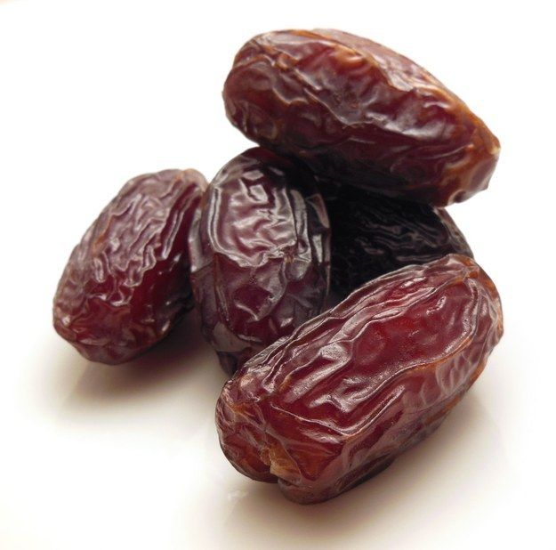

Dates

| Index |
|---|
| Short description |
| Nutritional value |
| Health benefits |
| Best time to eat |
| Who shoud avoid |
| Fun fact |
Short Description
Dates are sweet dry fruits obtained from date palm trees and are widely consumed in Middle Eastern and Asian countries. They are known for their rich taste, long shelf life, and high energy content.
Nutritional Value
| Nutrient | Amount |
|---|---|
| Calories | 277 kcal |
| Carbohydrates | 75 g |
| Dietary Fiber | 6.7 g |
| Potassium | 656 mg |
| Iron | 5% |
| Magnesium | Present |
Health Benefits
- Boosts energy naturally
- Improves digestion and prevents constipation
- Increases hemoglobin levels
- Strengthens bones
- Supports brain health
Best Time to Eat
Dates are best eaten in the morning or during fasting breaks. They provide instant energy and help stabilize blood sugar.
Avoid eating dates:
- Late at night
- In large quantities
Best practice: 2–3 dates with warm water or milk.
Who Should Avoid
- Diabetic patients, due to high sugar
- People on weight-loss diet, if eaten excessively
- Those with digestion problems, if overeaten
Fun Fact
- Dates have been cultivated for over 6,000 years
- Date palms can live for 100+ years
- Dates were one of the first cultivated fruits